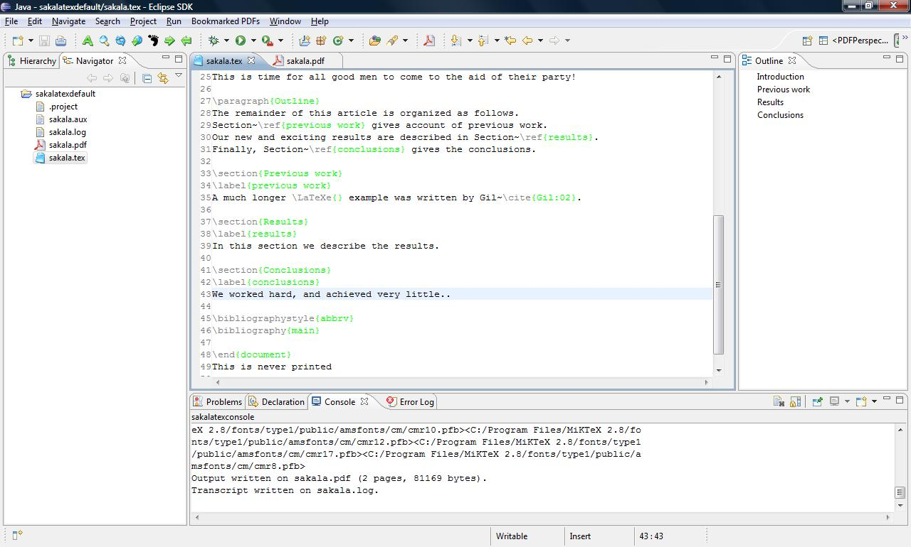

Sakalatex Eclipse Plug-in is written as a term project for SWE 573 Software Development Practice course at Masters in Software Engineering Program at Bogazici University, Turkey
Development Team
Sakalatex is an latex editor which uses miktex engine to convert tex files to pdf files.
It is just another editor for eclipse. Select File, New, Other, Sakalataex Project wizard to create a sakalatex project which includes one tex file. You can add as many tex files as you want. You can also choose one of the templates from the wizard.
edit the document and save. If Automatically Built option is on then tex file is converted to pdf every time you make a change and save your document. You can also select Build All from Project menu to trigger build.
here is the sample view of a sakalatex work environment
